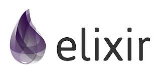

Functional
programming with
Who am I?
Jørn Ølmheim, SUB Well Planning and Integrity
- More than 20 years experience
- Software craftsman
- Polyglot programmer
- Data and solution architect D&W, EITA
Elixir basics
Written by Jose Valim in 2011
Elixir is a functional, concurrent, general-purpose programming language that runs on the Erlang virtual machine (BEAM).
Elixir builds on top of Erlang and shares the same abstractions for building distributed, fault-tolerant applications.
Elixir also provides a productive tooling and an extensible design. The latter is supported by compile-time metaprogramming with macros and polymorphism via protocols.
Repl demo
Installation
https://elixir-lang.org/install.html
Excercise
Play around a bit in the repl with the basics and functions.
Elixir applications
Resources and further reading
- Elixir-lang.org: Official Elixir site.
- Elixir intro guide: An introduction to Elixir.
- Installing Elixir: Guide for installing Elixir on all operating systems